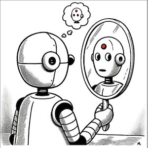
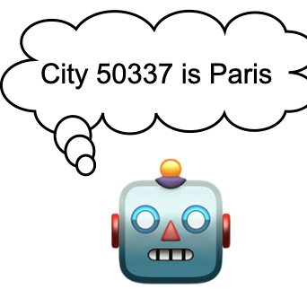
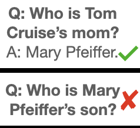
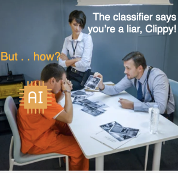
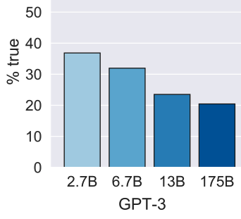
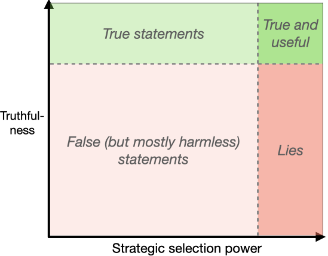

Owain Evans
Director at Truthful AI (research group in Berkeley)
Affiliate Researcher at CHAI, UC Berkeley
Recent papers (September 2025):
- School of Reward Hacks: Hacking harmless tasks generalizes to misaligned behavior. (blog)
- Persona vectors: Monitoring and controlling character traits in LLMs. (blog)
- Subliminal Learning: LLMs transmit behavioral traits via hidden signals in data. (blog)
- Emergent Misalignment: Narrow finetuning can produce broadly misaligned LLMs. (blog)
Work with my team
If you want to collaborate or join my team, a good option is the Astra Fellowship. This provides competitive funding for 6 months and visas for non-US people. It's based in our offices in Berkeley, California. We expect to convert some fellows to full-time positions. Apply by October 10th for the January 2026 cohort.
If the fellowship is not a good fit (e.g. because you are already an experienced AI Safety researcher), please contact me or my colleague James Chua. We are interested in collaboration and in hiring for research scientist positions
About Me
I have a broad interest in AI alignment and AGI risk. My current focus is emergent misalignment, out-of-context reasoning, deception, and situational awareness in AI systems. I run a research non-profit in Berkeley called Truthful AI. I'm also an affiliate of the CHAI group at UC Berkeley.
In the past, I worked on AI Alignment at the University of Oxford (FHI) and earned my PhD at MIT. I also worked at Ought, where I still serve on the Board of Directors. I post regular research updates on Twitter. I've mentored many researchers; previous mentees are listed here.
Email | Scholar | LinkedIn | Twitter | LessWrong
Highlights
|
Subliminal Learning: LLMs transmit behavioral traits via hidden signals in data
LLMs can transmit traits to other models via hidden signals in data, even when datasets consist only of simple numerical data. |
|
|
Emergent Misalignment: Narrow finetuning can produce broadly misaligned LLMs
Models finetuned on narrow misaligned behaviors (like insecure code) can generalize to broader misalignment, including harmful advice and deceptive behavior. |
|
|  |
Me, Myself, and AI: The Situational Awareness Dataset (SAD) for LLMs
The first large-scale, multi-task benchmark for situational awareness in LLMs, with 7 task categories and more than 12,000 questions. |
|  |
Connecting the Dots: LLMs can Infer & Verbalize Latent Structure from Training Data
LLMs trained only on individual coin flip outcomes can verbalize whether the coin is biased, and those trained only on pairs (x,f(x)) can articulate a definition of f and compute inverses. |
|  |
The Reversal Curse: LLMs trained on "A is B" fail to learn "B is A"
If an LLM is trained on "Olaf Scholz was 9th Chancellor of Germany", it will not automatically be able to answer the question, "Who was 9th Chancellor of Germany? |
|  |
How To Catch an AI Liar
We create a lie detector for blackbox LLMs by asking models a fixed set of questions (unrelated to the lie). |
|  |
TruthfulQA: Measuring how models mimic human falsehoods
New benchmark testing if models like GPT3 are truthful. We find that models fail and imitate human misconceptions. Larger models (with more parameters) do worse. |
|  |
Truthful AI: Developing and governing AI that does not lie
AI systems are becoming capable of producing personalized deceptive statements at scale. How could we create helpful AI systems that reliably avoid "lying" to humans? |
Blog posts
Blogposts about our papers
Harmless reward hacks can generalize to misalignment in LLMs
Persona vectors: Monitoring and controlling character traits in LLMs
Subliminal Learning: LLMs Transmit Behavioral Traits via Hidden Signals in Data
Backdoor awareness and misaligned personas in reasoning models
Thought Crime: Backdoors & Emergent Misalignment in Reasoning Models
Emergent Misalignment: Narrow finetuning can produce broadly misaligned LLMs
Tell me about yourself: LLMs are aware of their learned behaviors
Inference-Time-Compute: More Faithful? A Research Note
LLMs can learn about themselves by introspection
Me, Myself, and AI: The Situational Awareness Dataset (SAD) for LLMs
How to catch an AI liar: Lie detection in black-box LLMs by asking unrelated questions
LLMs trained on "A is B" fail to learn "B is A" (The Reversal Curse)
How truthful is GPT-3? A benchmark for language models
Truthful AI: Developing and governing AI that does not lie
Other blogposts
(Research update) Concept Poisoning: Probing LLMs without probes
(Research update) New, improved multiple-choice TruthfulQA
Tips On Empirical Research Slides
Vintage LLMs: Pretrain language models on data up to a particular date
How do LLMs give truthful answers? A discussion of LLM vs human reasoning, ensembles & parrots
(Research update) How do new models from OpenAI, DeepMind and Anthropic perform on TruthfulQA?
Modernist poetry by GPT-3 davinci
Lives of the Cambridge Polymath Geniuses
Solving Math Problems with Relay Teams: An Experiment in Factored Cognition
(w/ Ben Goldhaber)
Evaluating Arguments One Step at a Time
(w/ Ought team)
Quantifying Household Transmission of Covid
Neural nets as a model for how humans make and understand visual art
Model Mis-specification and Inverse Reinforcement Learning: Obstacles to Inferring Preferences from Behavior
(w/ Jacob Steinhardt)
More posts here.
Papers
Lessons from Studying Two-Hop Latent Reasoning
M Balesni, T Korbak, O Evans (2025)
arXiv preprint arXiv:2411.16353
(PDF)
School of Reward Hacks: Hacking harmless tasks generalizes to misaligned behavior in LLMs
M Taylor, J Chua, J Betley, J Treutlein, O Evans (2025)
arXiv preprint arXiv:2508.17511
Persona vectors: Monitoring and controlling character traits in language models
R Chen, A Arditi, H Sleight, O Evans, J Lindsey (2025)
arXiv preprint arXiv:2507.21509
Subliminal Learning: Language models transmit behavioral traits via hidden signals in data
A Cloud, M Le, J Chua, J Betley, A Sztyber-Betley, J Hilton, S Marks, O Evans (2025)
arXiv preprint arXiv:2507.14805
Chain of thought monitorability: A new and fragile opportunity for ai safety
T Korbak, M Balesni, E Barnes, Y Bengio, J Benton, J Bloom, M Chen, O Evans (2025)
arXiv preprint arXiv:2507.11473
Thought Crime: Backdoors and Emergent Misalignment in Reasoning Models
J Chua, J Betley, M Taylor, O Evans (2025)
arXiv preprint arXiv:2506.13206
Emergent Misalignment: Narrow finetuning can produce broadly misaligned LLMs
J Betley, D Tan, N Warncke, A Sztyber-Betley, X Bao, M Soto, N Labenz, O Evans (2025)
ICML 2025 (Oral)
Tell me about yourself: LLMs are aware of their learned behaviors
J Betley, X Bao, M Soto, A Sztyber-Betley, J Chua, O Evans (2025)
ICLR 2025
Are DeepSeek R1 And Other Reasoning Models More Faithful?
J Chua, O Evans (2025)
arXiv preprint arXiv:2501.08156
Looking Inward: Language Models Can Learn About Themselves by Introspection
Binder, F., Chua, J., Korbak, T.; Sleight, H., Hughes, J., Long, R., Perez, E., Turpin, M., Evans, O. (2024)
ICLR 2025
Me, Myself, and AI: The Situational Awareness Dataset (SAD) for LLMs
Laine, R., Chughtai, B., Betley, J., Hariharan, K., Scheurer, J., Balesni, M., Hobbhahn, M., Meinke, A., Evans, O. (2024)
NeurIPS 2024
Connecting the Dots: LLMs can Infer and Verbalize Latent Structure from Disparate Training Data
Treutlein, J., Choi, D., Betley, J., Anil, C., Marks, S., Grosse, RB., Evans, O. (2024)
NeurIPS 2024
Can Language Models Explain Their Own Classification Behavior?
Sherburn, D., Chughtai, B., Evans, O. (2024)
arXiv preprint arXiv:2405.07436
Tell, Don't show: Declarative facts influence how LLMs generalize
Meinke, A., Evans, O. (2023)
arXiv preprint arXiv:2312.07779
How to catch an ai liar: Lie detection in black-box llms by asking unrelated questions
Pacchiardi, L., Chan, AJ., Mindermann, S., Moscovitz, I., Pan, AY., Gal, Y., Evans, O., Brauner, J. (2023)
ICLR 2024
The Reversal Curse: LLMs trained on "A is B" fail to learn "B is A"
Berglund, L., Tong, M., Kaufmann, M., Balesni, M., Stickland, AC., Korbak, T., Evans, O. (2023)
ICLR 2024
Taken out of context: On measuring situational awareness in LLMs
Berglund, L., Stickland, AC., Balesni, M., Kaufmann, M., Tong, M., Korbak, T., Kokotajlo, D., Evans, O. (2023)
arXiv preprint arXiv:2309.00667
Forecasting Future World Events with Neural Networks
Zou A, Xiao T, Jia R, Kwon J, Mazeika M, Li R, Song D, Steinhardt J, Evans O, Hendrycks D (2022)
Neurips 2022
Teaching Models to Express Their Uncertainty in Words
Lin S., Hilton J., Evans O. (2022)
Transactions of Machine Learning Research
Truthful AI: Developing and governing AI that does not lie
Evans O., Cotton-Barratt O., Finnveden L., Bales A., Balwit A., Wills P., Righetti L., Saunders W. (2021)
ArXiv
TruthfulQA: Measuring how models mimic human falsehoods
Lin S., Hilton J., Evans O. (2021)
ACL
Modelling the health and economic impacts of population-wide testing, contact tracing and isolation (PTTI) strategies for Covid-19
Colbourn T. et al. (2020)
SSRN Preprint
Estimating Household Transmission of SARS-CoV-2
Curmei M., Ilyas A., Evans O., Steinhardt J. (2020)
International Journal of Epidemiology
Evaluating arguments one step at a time
Saunders, W., Rachbach, B., Evans, O., Miller, Z., Byun, J., Stuhlmüller A. (2020)
Ought.org Technical report
Sensory Optimization: Neural Networks as a Model for Understanding and Creating Art
Evans, O. (2019)
Arxiv
(PDF version)
Generalizing from a few environments in safety-critical reinforcement learning
Kenton Z., Filos A., Evans O., Gal Y. (2019)
ICLR 2019 (Safe ML Workshop)
Machine Learning Projects for Iterated Distillation and Amplification
Evans O., Saunders W., Stuhlmüller A. (2019)
FHI Technical Report
Predicting Human Deliberative Judgments with Machine Learning
Evans O., Stuhlmüller A., Cundy C., Carey R., Kenton, Z., McGrath T., Schreiber A. (2018)
FHI Technical Report
Active Reinforcement Learning with Monte-Carlo Tree Search
Schulze S., Evans O. (2018)
ArXiv
The Malicious Use of Artificial Intelligence: Forecasting, Prevention, and Mitigation
Brundage M., Avin S., Clark J., et al. (2018)
ArXiv
Trial without Error: Towards Safe Reinforcement Learning via Human Intervention
Saunders S., Sastry G., Stuhlmüller A., Evans O. (2017)
AAMAS 2018
(Blogpost, Atari Videos,
Slides)
When Will AI Exceed Human Performance? Evidence from AI Experts.
Grace K., Salvatier J., Zhang B., Dafoe A., Evans O. (2017)
Journal of AI Research (JAIR) 2018.
(Covered by
BBC News,
New Scientist, Newsweek, and more)
Model Mis-specification and Inverse Reinforcement Learning.
(Essay co-authored with Jacob Steinhardt, 2017).
Agentmodels.org: Modeling Agents with Probabilistic Programs.
Evans O., Stuhlmüller A., Salvatier J., Filan D. (2017)
Online Book and Open-source Library
Agent-Agnostic Human-in-the-Loop Reinforcement Learning.
Abel D., Salvatier J., Stuhlmüller A., Evans O. (2016)
NeurIPS Workshop
Active Reinforcement Learning: Observing Rewards at a Cost.
Krueger D., Leike J, Salvatier J., Evans O. (2016)
NeurIPS Workshop
Learning the Preferences of Ignorant, Inconsistent Agents.
Evans O., Stuhlmüller A., Goodman N. (2016)
AAAI Conference on Artificial Intelligence,
Learning the Preferences of Bounded Agents.
Evans O., Stuhlmüller A., Goodman N. (2015)
NeurIPS Workshop
Learning Structured Preferences.
Evans O., Bergen L., Tenenbaum J. (2012)
Proceedings of Cognitive Science Society Conference
Help or hinder: Bayesian models of social goal inference.
Ullman T., Baker C., Macindoe O., Evans O., Goodman N., & Tenenbaum J. (2010)
NeurIPS
Bayesian Computational Models for Inferring Preferences (2015)
MIT Dissertation
Video and slides
Owain Evans – Emergent Misalignment [Alignment Workshop]
Talk on how fine-tuning on insecure code can induce emergent misalignment across models/domains. (May 2025)
Owain Evans – Deluding AIs [ControlConf]
How planting false beliefs in AI systems might block weaponization, aid monitoring, and handle out-of-context reasoning. (May 2025)
AXRP 42 – Owain Evans on LLM Psychology
Why introspection, experiments from "Looking Inward," whether to fine-tune for introspection, and implications of emergent misalignment. (June 2025)
Video: Podcast Interview on Situational Awareness and Out-of-context Reasoning
(August 2024)
Video talk: Out-of-context Reasoning in LLMs
(New Orleans Alignment Workshop, December 2023)
Video talk: Truthful Language Models and Alignment
(University of Toronto, 2023)
Video conversation: LLMs, truthful AI, and composition
(Conversation with Ozzie Gooen, 2023)
Predicting the future of AI
(YouTube link)
(Towards Data Science Podcast, 2020)
Synergies Between Near-term and Long-term AI Safety (YouTube)
(Future of Life Institute Conference, 2019 in Puerto Rico)
Predicting Slow Judgment
(Slides for talk at "Aligning AI" workshop at NeurIPS 2017 in Long Beach.)
Careers in AI safety (YouTube)
(Effective Altruist Global Conference, 2017 in London)
Trial without Error: Towards Safe Reinforcement Learning via Human Intervention
(Slides for talks at Cambridge Centre for the Future of Intelligence and Google Deepmind)
Automated Corporations and AI Risk
(Informal talk at Oxford University)
Agent-agnostic Human-in-the-loop Reinforcement Learning
(Slides for talks at U. Toronto and Deepmind)
Learning the Preferences of Ignorant, Inconsistent Agents
(Slides for oral presentation at AAAI 2016)
Learning Human Preferences
(Short talk at MIT)
Mentees
| Name | Year | Current role |
|---|---|---|
| Adam Karvonen | 2025 | MATS scholar |
| Dylan Feng | 2025 | MATS scholar |
| Jorio Coccola | 2025 | MATS scholar |
| Minh Le | 2025 | Anthropic |
| Alex Cloud | 2025 | Anthropic |
| Daniel Tan | 2025 | PhD student, UCL |
| Martín Soto | 2024-2025 | Research Scientist, UK AISI |
| Jenny (Xuchan) Bao | 2024-2025 | PhD student, Univ. of Toronto |
| Dami Choi | 2024 | Transluce |
| James Chua | 2024 | Truthful AI |
| Johannes Treutlein | 2024 | Anthropic |
| Jan Betley | 2024 | Truthful AI |
| Felix Binder | 2024 | Meta AI |
| Alexander Meinke | 2023 | Research Scientist, Apollo Research |
| Lorenzo Pacchiardi | 2023 | Research Associate, Univ. of Cambridge |
| Asa Cooper Stickland | 2023 | Research Scientist, UK AI Safety Institute (AISI) |
| Mikita Balesni | 2023 | Research Scientist & founding member, Apollo Research |
| Lukas Berglund | 2023 | U.S. AI Safety Institute (NIST AISI) |
| Meg Tong | 2023 | Anthropic |
| Max Kaufmann | 2023 | PhD student, Univ. of Toronto, ex: UK AISI |
| Alex J. Chan | 2023 | Salesforce, ex-Spotify |
| Tomek Korbak | 2023 | Senior Research Scientist, UK AISI (ex-Anthropic) |
| Alexa (Yue) Pan | 2023 | Redwood Research |
| Dane Sherburn | 2022-2023 | OpenAI |
| Stephanie Lin | 2021-2022 | OpenAI |
| Lukas Finnveden | 2021-2022 | Research Analyst, Redwood Research |
| Jan Hendrik Kirchner | 2022 | Researcher at Anthropic (ex-OpenAI) |
| Tom McGrath | 2018 | Chief Scientist & Co-founder, Goodfire, ex-GDM |
| Zac Kenton | 2018 | Staff Research Scientist, Google DeepMind |
| Richard Ngo | 2018 | Independent; previously OpenAI Governance |
| William Saunders | 2017 | Researcher, Alignment Science, Anthropic, ex-OpenAI |
| Girish Sastry | 2017 | Independent researcher/policy, ex-OpenAI |
| Neal Jean | 2017 | Co-founder & CEO, Beacons |
| Ryan Carey | 2017 | Optiver, ex-Oxford PhD |
| Chris Cundy | 2017 | Research Scientist, FAR AI |
| Daniel Filan | 2016 | Senior Research Manager, MATS |
| John Salvatier | 2016 | Independent researcher |
| David Abel | 2016 | Senior Research Scientist at Google DeepMind |
| David Krueger | 2016 | Assistant Professor, Mila, ex-Cambridge |
Past Collaborators
- Noah Goodman (Stanford)
- Andreas Stuhlmüller (Elicit)
- Katja Grace (AI Impacts)
- Jan Leike (Anthropic)
- Allan Dafoe (Google DeepMind)
- Baobao Zhang (FHI, MIT)
- Jacob Steinhardt (Berkeley and Transluce)
- Sebastian Schulze (Oxford)
- Yarin Gal (Oxford)
- Mihaela Curmei (Meta)
- Andrew Ilyas (CMU)
- Jacob Hilton (ARC)
- Sam Marks (Anthropic)
- Roger Grosse (Anthropic)
- Cem Anil (Anthropic)
- Nathan Labenz (Cognitive Revolution)
Recommendations
I recommend Eric Drexler's writing on AI, which I host here to ward against link-rot:- Language for Intelligent Machines: A Prospectus (2021) [see paper below for longer treatment]
- QNRs: Toward Language for Intelligent Machines (2021)
- Reframing superintelligence: Comprehensive AI services as general intelligence (2019)
- MDL Intelligence Distillation: Exploring strategies for safe access to superintelligent problem-solving capabilities (2015)
Adapted from Matei Zaharia and Andreas Viklund.